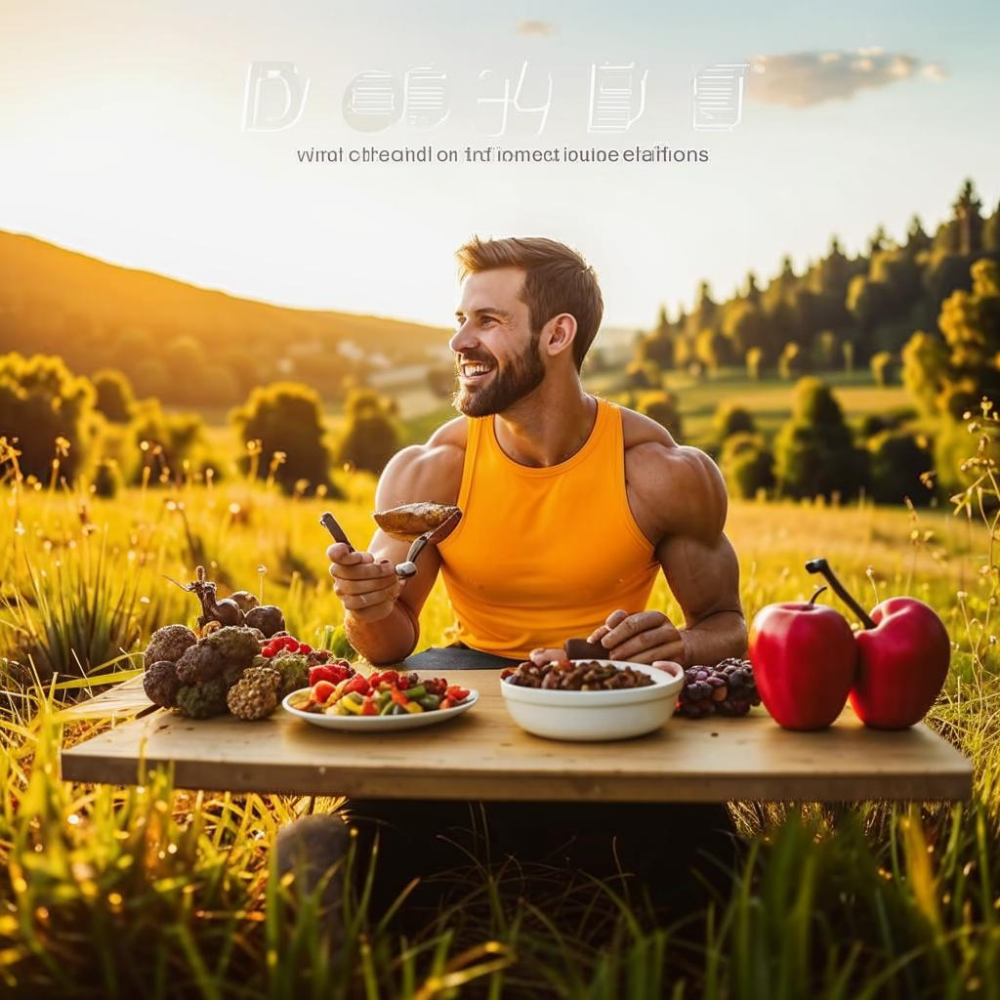

5 основ здорового образа жизни

Вода
Пейте 1,5-2 литра воды в день. Начинайте утро со стакана воды.

Сон
Спите 7-8 часов. Ложитесь до 23:00 для восстановления организма.

Питание
Ешьте больше овощей и фруктов. Соблюдайте баланс белков, жиров и углеводов.

Движение
Проходите 5000-8000 шагов в день. Найдите активность по душе.

Управление стрессом
Делайте перерывы каждый час. Медитируйте, дышите, отдыхайте.
Маленькие шаги = большие изменения
Начните с одного правила. Через 21 день оно станет привычкой. Ваше здоровье в ваших руках!